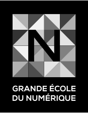
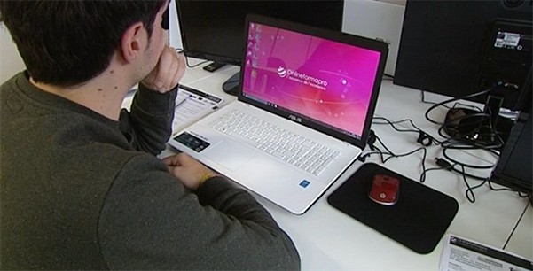

Une formation qualifiante accessible sans condition de diplôme.
En savoir plus
La Grande Ecole du Numérique est un réseau de plus de 400 formations aux métiers du numérique. Elle favorise l'inclusion et répond aux besoins des recruteurs en compétences numériques.
Les 14 écoles Access Code School ont été labellisées en tant que <<Fabrique de la Grande École du Numérique>>
La Grande École du Numérique c'est répondre au besoin d'emploi dans le secteur du numérique.
notre formation est gratuite, diplômante, intensive et accessible sans prérequis de diplôme. Elle permet un accès rapide aux métier de Développeur d'applications web & mobile. Après 2 mois d'aprentissage, le stagiaire se spécialise afin de devenir Développeur Front-End ou Back-End en fonction de ses goûts et de ses compétendes.
Motivation, esprit logique, autonomie, capacité d'analyse, rigueur, sens créatif, capacité à s'autoformer et envie de travailler en équipe sont les seuls critères de sélection.
JE M'INSCRIS
